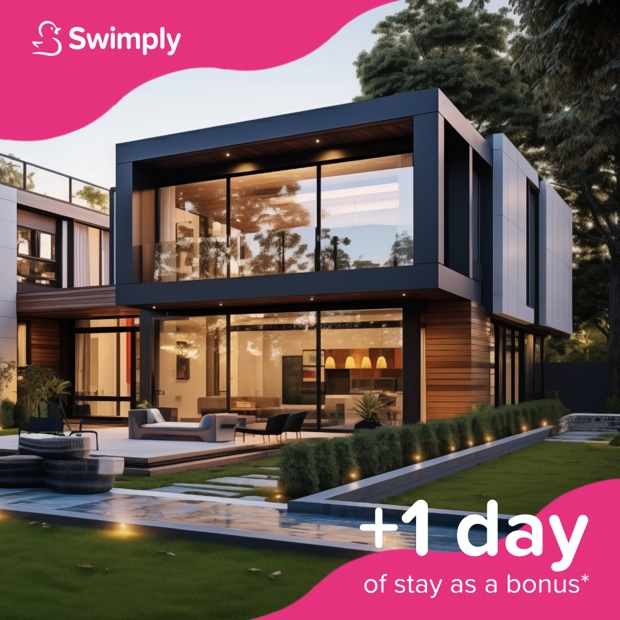
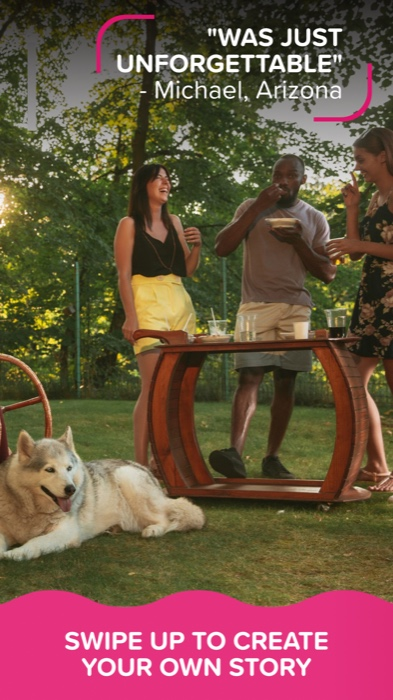

Twigeo · for Swimply
Generative ad production
- Was
- One creative a day, assembled by hand.
- Built
- A pipeline on the Bannerbear API: live listings composed into brand templates, shipped to TikTok, Meta, X and Google Ads.
- Runs
- The agency's media buyers, on their own accounts.
~300 creatives a day · ROAS +50–70%